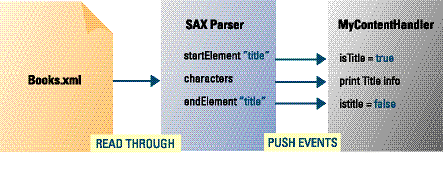
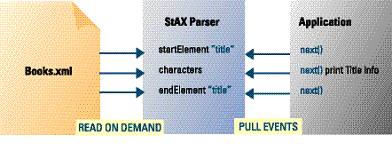

|
Developer XML
Parsing XML Efficiently
By Ping Guo, Julie Basu, Mark Scardina, and K. Karun
Choose the right XML parsing technique for your Java applications.
Efficient parsing of XML documents is more and
more critical as XML gets adopted more widely. It is very important to
have an efficient way to parse XML data, especially in applications
that are intended to handle large volumes. Improper parsing can result
in excessive memory usage and processing times that can hurt
scalability.
Several types of XML parsers are available. Which one is right for your
situation? This article examines three popular XML parsing techniques for
Java and shows you how to choose the correct method, based on the requirements of your application.
An XML parser takes as input a raw serialized
string and performs certain operations on it. First it checks the
syntactic well-formedness of the XML data, making sure that the start
tags have matching end tags and that there are no overlapping elements.
Most parsers also implement validation against the Document Type
Definition (DTD) or the XML Schema to verify that the structure and
content are as you specified. Finally, the parsing output provides
access to the content of the XML document via programmatic APIs.
There are three popular XML parsing techniques for Java:
- Document Object Model (DOM), a mature standard from W3C
- Simple API for XML (SAX), the first widely adopted API for XML in Java and a de facto standard
- Streaming API for XML (StAX), a promising new parsing model introduced in JSR-173
Each of these techniques has benefits and drawbacks.
The following XML document, books.xml, describes a book catalog and is used in the examples in this article:
<catalog>
<!—Sample —>
<book id="101">
<title>XML in a Nutshell</title>
<author>Elliotte Rusty Harold, W. Scott Means</author>
<price>39.95</price>
</book>
<book id="121">
<title>Who Moved My Cheese</title>
<author>Spencer, M.D. Johnson, Kenneth H. Blanchard</author>
<price>19.95</price>
</book>
</catalog>
DOM Parsing
DOM is a tree-based parsing technique that
builds up an entire parse tree in memory. It allows complete, dynamic
access to a whole XML document.
Figure 1shows
the treelike structure of the DOM parsing model. Document is the root
for all the DOM trees, and the root has at least one child node, the
root element, which is the catalog element in the sample code. Another
node is DocumentType, for the DTD declaration, which is not defined in
our sample. The catalog element has child nodes, and so do its child
nodes. Child nodes can be elements, text, comments, processing
instructions, and the like.
The following example illustrates how the DOM
API works. This sample code prints out the titles of all the books from
the previous XML document for a catalog.
DOMParser parser = new DOMParser();
parser.parse("books.xml");
Document document = parser.getDocument();
NodeList nodes =
document.getElementsByTagName("title");
while(int i = 0;
i < nodes.length(); i ++) {
Element titleElem =
(Element)nodes.item(i);
Node childNode =
titleElem.getFirstChild();
if (childNode instanceof Text) {
System.out.println("Book title is: "
+ childNode.getNodeValue());
}
}
This program takes the XML filename, creates the
DOM tree, and finds all the DOM element nodes for the title elements by
using the getElementsByTagName()
method. Finally, it prints the text information associated with each of
the title elements, by iterating over the list of title elements and
examining the first child that has the text contained between the start
and end tags of the element, by using the getFirstChild() method.
As you see, using DOM is straightforward. You
can access the XML document randomly because the entire tree is built
in memory. The DOM APIs allow modification of the nodes, such as
appending a child or updating or deleting a node.
Although the memory tree structure provides good
navigation support, there are parsing strategy issues to consider.
First, the entire XML document has to be parsed at one time—partial
parsing is not possible. Second, loading the whole document and
building the entire tree structure in memory can be expensive,
especially when the document is large. Typically, the DOM tree is an
order of magnitude larger than the document, so it can consume a lot of
memory. Third, the generic DOM node type is an interoperability
advantage but may not be the best when you do object type binding.
Certain kinds of applications are better suited
for DOM parsing than others. DOM parsing is appropriate when the
application needs to have random access to the XML document. A good
example is an XSL processor that needs to navigate through an entire
file repeatedly as it processes templates. Because DOM enables you to
update the document, it is also convenient for applications, such as
XML editors, that need to modify data.
SAX Parsing
SAX is an event-driven push model for processing
XML. It is not a W3C standard, but it is a very well-recognized API
that most SAX parsers implement in a compliant way. Rather than
building a tree representation of an entire document as DOM does, a SAX
parser fires off a series of events as it reads through the document.
These events are pushed to event handlers, which provide access to the
contents of the document. There are three basic types of event handlers:
- DTDHandler, for accessing the contents of XML DTDs
- ErrorHandler, for low-level access to parsing errors
- ContentHandler, the prevalent type, for accessing the contents of the document
Figure 2 shows how the SAX
parser reports events through a callback mechanism. The parser reads the input document and pushes each event to MyContentHandler while processing the document.
|

|
| Figure 2: SAX reports a document to an application as a series of events. |
The following sample does the same thing as the previous DOM example: It prints out a book's title information.
First, write a ContentHandler implementation class, which is based on the DefaultHandler class and replaces the methods for the type of events in which you are interested. The code throws
away any remaining events from the DefaultHandler class. The customized ContentHandler
class provides the callback methods and must handle state management,
dealing with start element events, end element events, and character
events—for all the elements, not only for the title element.
public class MyContentHandler extends DefaultHandler {
boolean isTitle;
public void startElement(String uri, String localName,
String qName, Attributes atts) {
if (localName.equals("title"))
isTitle = true;
}
public void endElement(String uri, String localName,
String qName) {
if(localName.equals("title"))
isTitle = false;
}
public void characters(char[ ] chars, int start, int length) {
if(isTitle)
System.out.println(new String(chars, start, length));
}
}
Second, set your customized ContentHandler
to the SAX parser, and then the parser begins to process the XML
document. The parser generates the events and pushes them into the ContentHandler while reading the documents from beginning to end.
SAXParser saxParser = new SAXParser();
MyContentHandler myHandler = new
MyContentHandler();
saxParser.setContentHandler(myHandler);
saxParser.parse(new File("books.xml"));
In comparison to DOM, the SAX parser offers a
great performance benefit. It provides efficient low-level access to
the content of the XML document. The SAX model has the major advantage
of low memory consumption, because the entire document does not need to
be loaded into memory at one time, which enables a SAX parser to parse
a document larger than the system memory. Additionally, you do not have
to create objects for all the nodes, as you need to do in DOM. Finally,
the SAX "push" model can be used in a broadcast context, where multiple
ContentHandlers can be registered and receive events in parallel, instead of in a pipeline, where one hands off to another.
The disadvantage of SAX is that you have to
implement the event handlers to handle all incoming events. You must
maintain this event state in your application code. Because the SAX
parser does not communicate meta-information such as DOM's parent/child
support, you have to keep track of where the parser is in the document
hierarchy. Thus, the more complex your documents are, the more complex
your application logic becomes. Even though there is no need to load
the entire document into memory at one time, a SAX parser still needs
to parse the whole document, as with DOM.
Probably the biggest problem facing SAX is that
it does not have built-in document navigation support such as that
provided by XPath. This, coupled with its one-pass parsing, means there
is no random access support. This limitation also shows up in
namespaces: Elements that have inherited namespaces will not be
annotated. These limitations make SAX a poor choice for manipulating or
modifying a document.
|
Oracle and XML
The Oracle XML Developer's Kit provides XML
parsers for Java, C, and C++ development. Each of these provides DOM
and SAX interfaces implemented for the enterprise. A technology preview
of the StAX parser for Java is also available. These components can be
downloaded from the Oracle Technology Network's XML Technology Center,
at /tech/xml.
|
Applications that need only to read the content
in a single pass can benefit greatly from SAX parsing. Many B2B and EAI
applications use XML just as an encapsulation format in which the
receiving end simply retrieves all the data. This is where SAX has the
clear advantage over DOM, due to the former's efficiency and resulting
high throughput. SAX 2.0 has a built-in filtering mechanism that makes
it easy to output a document subset or do simple document
transformation. Finally, SAX parsing is very useful for validation
against DTDs and XML schemas. In fact, Oracle uses the SAX parser
internally to do this validation, gaining greater efficiency while
using less memory than using DOM.
StAX Parsing
StAX is an exciting new parsing technique that,
like SAX, uses an event-driven model. However, instead of using SAX's
push model, StAX uses a pull model for event processing. Instead of
using a callback mechanism, a StAX parser returns events as requested
by the application. StAX also provides user-friendly APIs for read-in
and write-out.
Whereas SAX returns different types of events to the ContentHandler, StAX returns its events to the application and can even provide the events as objects.
Figure 3
shows that when an application requests an event, a StAX parser reads
on demand from the XML document and returns the event to the
application.
|

|
| Figure 3: An application requests StAX to report an event |
StAX includes factories for creating the StAX
reader and writer, so applications can use the StAX interfaces without
reference to the details of a particular implementation.
Unlike DOM and SAX, StAX specifies two parsing
models: The cursor model, like SAX, simply returns events. The iterator
model returns events as objects, which provides a more natural
interface but has the additional overhead of object creation. The
following illustrations of StAX parsing APIs give examples of each
model.
The following example prints the book title information from the XML book catalog above, using the cursor model.
XMLStreamReader reader = XMLInputFactory
.newInstance().createXMLStreamReader(
new FileInputStream("books.xml"));
while(reader.hasNext()) {
int eventType = reader.next();
if (eventType == XMLEvent
.START_ELEMENT && reader.getLocalName()
.equals("title")) {
reader.next();
System.out.println(reader.getText());
}
}
In this example, after the reader has been set up, the application requests the next event, using the reader.next()
method call. This makes the StAX parser move the cursor to the next
event position. If this event indicates the start of an element named
"title", the application code will call reader.next() one more time, to advance the cursor, and will then obtain the text for the title element, using the reader.getText() method call.
The following example uses the iterator model, in which the events are returned as objects.
XMLEventReader eventReader =
XMLInputFactory.newInstance()
.createXMLEventReader(
new FileInputStream("books.xml"));
while(eventReader.hasNext()) {
XMLEvent event = eventReader.next();
if (event instanceof StartElement &&
((StartElement)event).getLocalName()
.equals("title"))
{
System.out.println( ((Characters)eventReader.next())
.getData());
}
}
In this example, the application requests the
next event, which makes the StAX parser advance to the next event
position and return the corresponding event object. The application can
access the contents through the event object, using the getData() method, which returns the book
title information.
The performance of the StAX cursor model is
comparable to that of SAX parsing. However, with StAX, the application
has control of the parsing, which makes the code easier to write and
maintain. StAX also provides the iterator model for ease of use, but in
this case, creating event objects has a performance cost. Unlike SAX,
which requires the application to keep track of where it is in the
document, StAX—by virtue of its ability to return only requested
events—frees the application of that task. What the examples do not
show is the filtering capabilities of StAX, which are much more
powerful than SAX's.
In comparison to DOM, StAX has the same
disadvantage as SAX in terms of lack of full navigational support.
Forward navigation through a document is easier with StAX than with
SAX, in that the application has control over which events it gets and
when.
StAX's ability to modify a document is similar
to SAX's, in that a new document is created. Write-out APIs are
provided in both the cursor and iterator models of StAX, but document
modification is still quite difficult if you want to do anything beyond
simple one-pass transformations.
StAX parsing satisfies the majority of a SAX
application's requirements, so if an application is well suited for SAX
parsing, it can also benefit from the use of StAX. In addition, when
applications need to take advantage of the streaming model for
performance while maintaining full support for namespaces, StAX parsing
is the optimum choice. Finally, for processing multiple inputs, as in a
set of imported schemas, an application can easily request events from
multiple StAX parsers and put them into a single context, without the
need for the complexity of multiple threads. StAX is especially useful
in the new areas of Web services and JAX-RPC, in which all of these
features are required.
Select the Correct Parsing Model
This article has presented the three standard
parsing techniques for Java, describing how they work and their
individual advantages, disadvantages, and appropriate applications. The
points of this article can be distilled into a few simple rules:
- Use DOM parsing only when your
application needs to recursively navigate, alter, or have random access
to an entire document at one time.
- Use SAX parsing when you need simple read-only streaming and want a robust implementation that reflects a mature standard.
- Use StAX for streaming applications when you require full namespace or multiple-document support or need an object interface.
The various parsing modes exist for a reason,
and as distributed-service-based applications proliferate, optimized
performance will become an essential ingredient for success.
Ping Guo (ping.guo@oracle.com) and Julie Basu (julie.basu@oracle.com) are members of the Oracle Java and XML technology group. Mark Scardina (mark.scardina@oracle.com) and K. Karun (k.karun@oracle.com) are members of the Oracle CORE and XML Development group.
XML Parsing Techniques at a Glance
| TECHNIQUE | PROS | CONS | BEST FOR... |
| DOM Parsing | - Easy to use
- Rich set of APIs for easy navigation
- Entire tree loaded into memory, allowing random access to XML document
| - Entire XML document must be parsed at one time
- Expensive to load entire tree into memory
- Generic DOM node not ideal for object-type bindingÑmust create objects for all nodes
| - Applications that need to modify XML documents or for XSLT (don't use for read-only XML applications)
|
| SAX Parsing | - Entire document not loaded into memory, resulting in low memory consumption
- Push model allows for registration of multiple ContentHandlers
| - No built-in document navigation support
- No random access to XML document
- No support for modifying XML in place
- No support for namespace scoping
| - Applications that only read from XML (don't use for manipulating or modifying an XML document)
|
| StAX Parsing | - Contains two parsing models, for ease or performance
- Application controls parsing, easily supporting multiple inputs
- Powerful filtering capabilities provide efficient data retrieval
| - No built-in document navigation support
- No random access to XML document
- No support for modifying XML in place
| - Applications that need a streaming model and support for namespaces (don't use for manipulating or modifying an XML document)
|
|